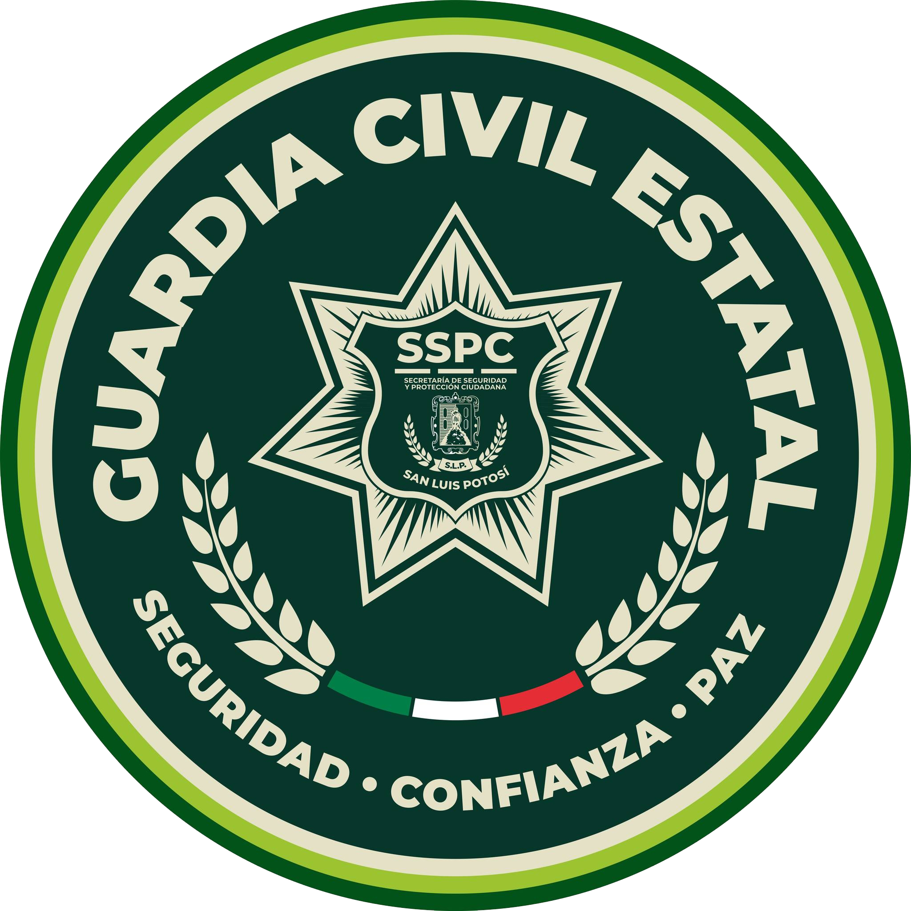

Bienvenido a San Luis Roleplay. Nuestro objetivo es ofrecer la experiencia de simulación más realista basada en el estado de San Luis Potosí dentro de ER:LC.
Aquí la economía es balanceada y el rol es estricto. Cada decisión tiene consecuencias. Contamos con un sistema legal apegado a la realidad y facciones activas.
Es obligatorio contar con un micrófono para comunicarte. El rol de voz es fundamental para mantener el realismo y la interacción en nuestra comunidad.
Debes tener 13 años o más para poder jugar en el servidor, respetando los Términos de Servicio tanto de Roblox como de Discord.
Si deseas unirte a la SSPC, GCE o DEFENSA, debes ingresar a nuestro servidor principal de Discord. Ahí encontrarás un canal específico de postulaciones donde te daremos acceso a los servidores de academia para cada corporación.
Secretaría de Seguridad y Protección Ciudadana. Encargados de la vialidad, prevención del delito y atención ciudadana en la capital.

Guardia Civil Estatal. Fuerza táctica y de reacción para operativos de alto impacto en todo el estado de San Luis Potosí.
Seguridad federal. Patrullaje en carreteras, aduanas e intervención en situaciones de máxima seguridad.
Prohibido asesinar o atropellar a otros jugadores sin un motivo de rol previo y válido.
Tu personaje debe tener miedo a morir. Si te apuntan con un arma y estás en desventaja, debes rendirte.
Prohibido realizar acciones irreales que no podrías hacer en la vida real (ej. saltar de un puente con un auto y seguir manejando).
Si tu personaje muere y reaparece en el hospital, olvida todo lo sucedido en ese rol y no puede volver a la zona del conflicto.
Nunca mezcles problemas reales con el juego. Usa el chat OOC solo para dudas técnicas, nunca para insultar o interrumpir un rol.